Removal
Fig. 13 Transaxle Mount Bolt Removal:
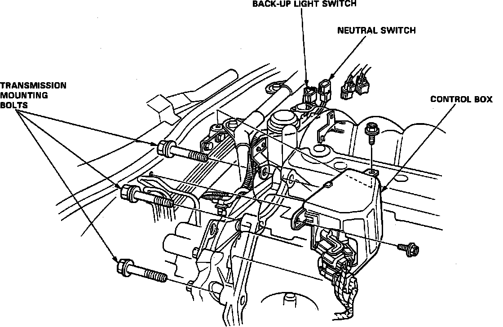
Removal
- Make sure lacks and safety stands are placed properly, and hoist brackets are attached to correct positions on the engine.
- Apply parking brake and block rear wheels, so car will not roll off stands and fall on you while working under it.
CAUTION: Use fender covers to avoid damaging painted surfaces.
NOTE: The original radio may has a coded theft protection circuit. Be sure to get the customer's code number before disconnecting the battery.
- removing the No.56 (7.5 A) fuse in the under-hood fuse/relay box.
- Removing the radio.
After service, reconnect power to the radio and turn it on. When the word "CODE" is displayed, enter the customer's 5-digit code to restore radio operation.
1. Disconnect the battery negative (-) and positive (+) cables from the battery.
1. Disable coded theft protection system as described under Vehicle Damage Warnings.
2. Disarm airbag system as described under Technician Safety Information.
3. Remove strut bar.
5. Remove control box, Fig. 13.
CAUTION Do not remove control box vacuum lines.
6. Disconnect switch electrical connectors.
7. Remove the transmission mounting bolts.
8. Drain transmission oil. Reinstall the drain plug with a new washer.
9. Remove clutch hose bracket from rear engine hanger.
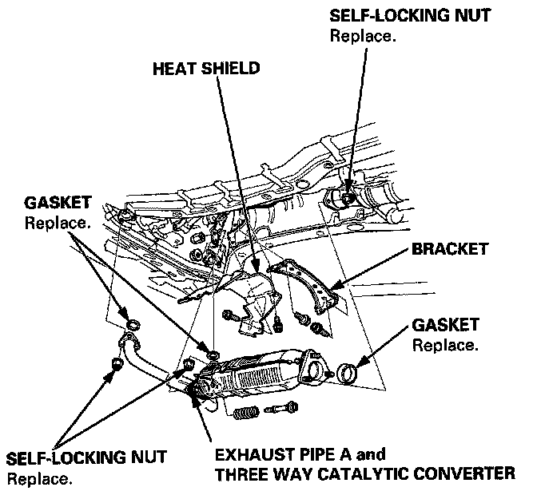
10. Remove exhaust pipes, then heat shield and bracket.
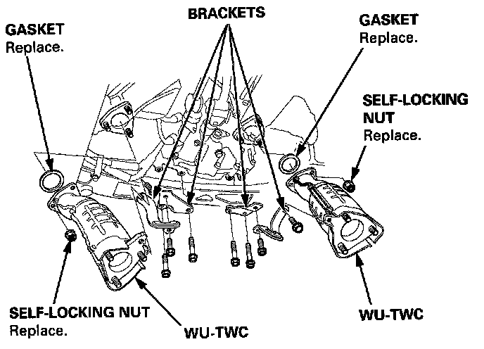
11. Remove the brackets and warm up three way catalytic converters (WU-TWC).
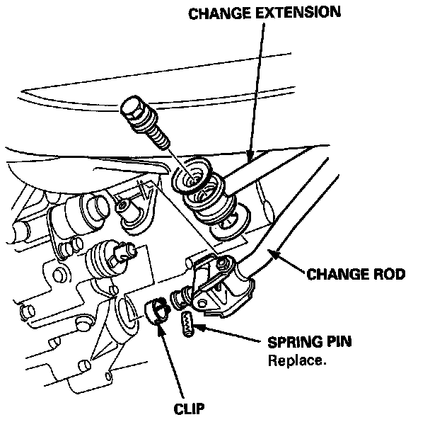
12. Remove the change extension and change rod.
13. Remove secondary cover and 36 mm sealing bolt.
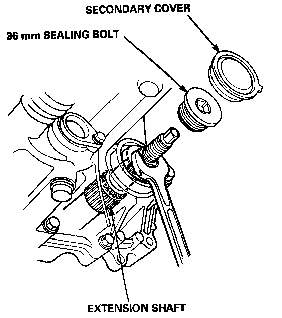
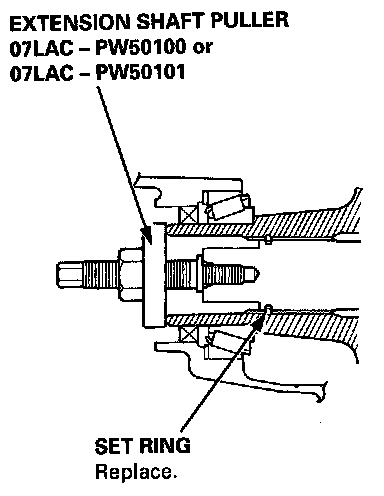
14. Disconnect the extension shaft from the differential using the special tool shown.
NOTE: Shift the lever into low gear to lock the secondary gear.
14. Disconnect oil pump pipe cooler hoses.
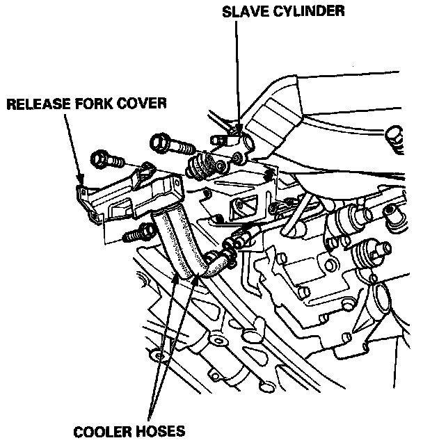
15. Remove release fork cover and clutch slave cylinder, ensuring not to bend pipe. Do not operate clutch once slave cylinder is removed.
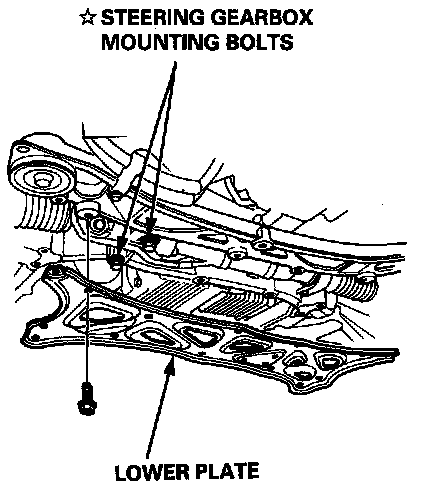
16. Remove lower engine cover plate.
NOTE: Reinstall the steering gearbox mounting bolts.
*:Corrosion resistant bolt.
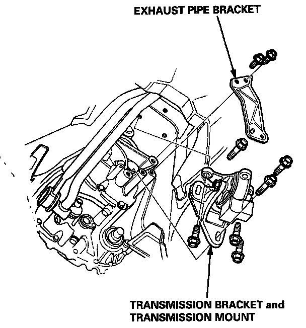
17. Remove exhaust pipe stay.
18. Remove transmission bracket, then loosen transaxle mount attaching nuts.
19. Remove secondary cover and 36 mm sealing bolt.
20. Position shifter in low gear to lock secondary gear.
21. Place a jack under the transmission and raise the transmission just enough to take weight off of the mounts, then remove the mid mounts.
22. Remove the transmission mounting bolts.
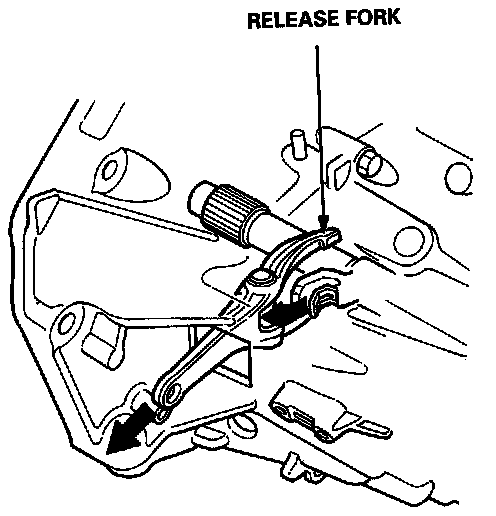
23. Remove release fork from clutch release, then hang fork on clutch housing.
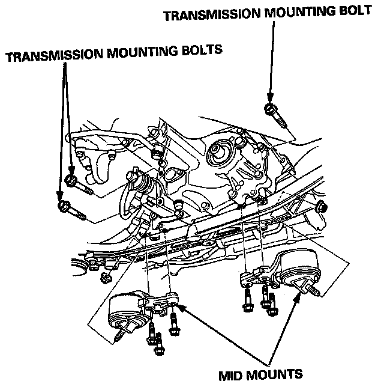
24. Remove transmission housing attaching bolts.
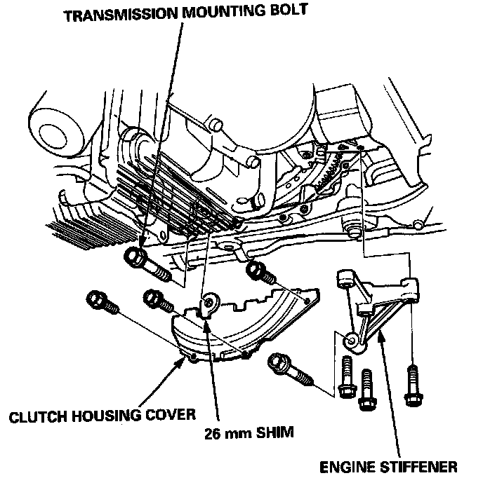
25. Remove engine stiffener.
26. Remove clutch cover attaching bolts.
27. Remove the transmission mounting bolt and 26 mm shim.
28. Pull the transmission away from the engine until it clears the mainshaft.